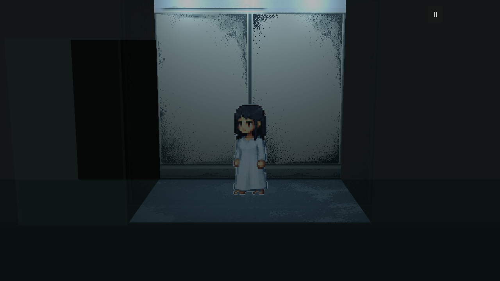
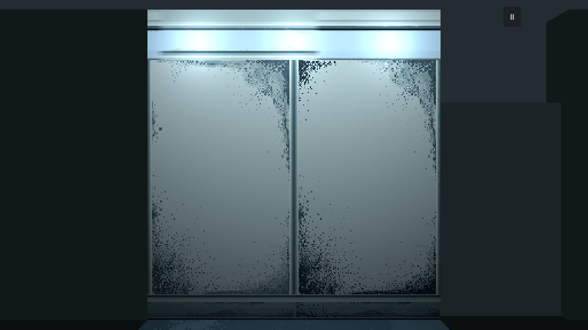
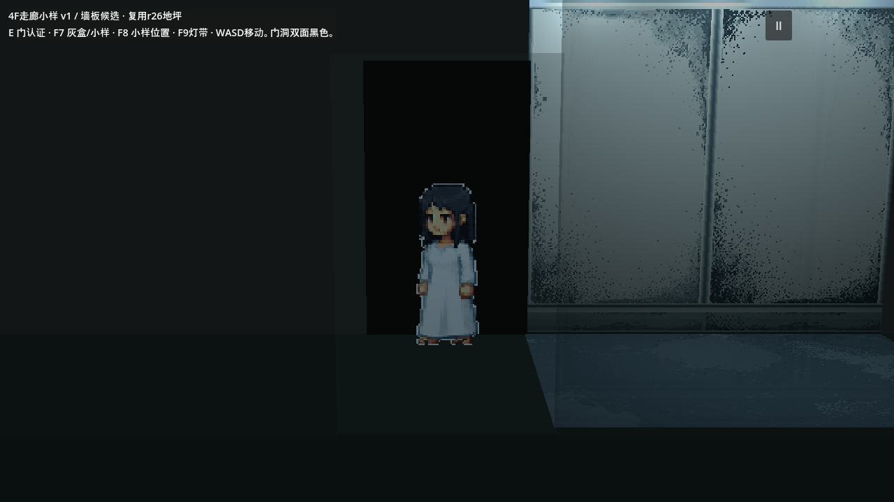
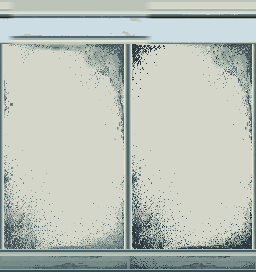

继承r30的独立F6候选。E互动认证 → 黑色门洞 → 出门黑屏 → 镜头反向180° → 邻室遮挡透明；返回室内恢复。
墙板已复用室内r24，移除重复灯管；F9开关灯带。地坪复用r26中央过道，避开舱位痕迹和漏液。靠近门按E后认证，门洞两面始终为黑色。此前生成用30次，本次复用与门逻辑修改0次。下图均为实际Godot输出，不是效果示意图。
来源、操作与验证 · F6：scenes/dev/cryo_corridor_sample_v1.tscn · F8到小样，F7切换灰盒／小样。


以下是连续操作的四个状态截图；黑屏帧是真实全黑输出。实际淡黑0.22秒、黑屏保持0.08秒、淡入0.30秒。


左：室内r24原生裁片，复用到走廊两侧。右：r26中央过道的256×192原生裁片，没有舱底轮廓。没有插值放大，也没有用脚本添污斑。